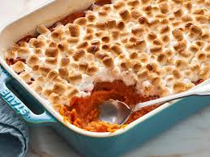

Sweet Potato Cassarole

Description
Sweet potato casserole is a comforting, classic dish that's often enjoyed during holiday meals. To prepare it, sweet potatoes are peeled,
boiled, and mashed until smooth. The mashed sweet potatoes are then mixed with ingredients like butter, brown sugar, cinnamon, and vanilla to
enhance their natural sweetness, along with a touch of milk or cream to make the mixture creamy. Once combined, the sweet potato mixture is spread
into a baking dish, forming the base of the casserole.
The topping is what makes sweet potato casserole special. A layer of mini marshmallows and/or a pecan streusel adds texture and flavor.
The pecan streusel is made by mixing chopped pecans with brown sugar, butter, and flour to create a crunchy, buttery topping. As the casserole
bakes, the marshmallows become golden and gooey, while the pecan topping crisps up, offering a contrast to the soft, sweet filling. This dish
strikes the perfect balance between sweet and savory, making it a favorite side dish for festive gatherings.
Ingredients
- 4-5 large sweet potatoes (peeled and cubed)
- 1/4 cup butter (melted)
- 1/2 cup brown sugar
- 1/4 cup milk or heavy cream
- 1 teaspoon vanilla extract
- 1/2 teaspoon ground cinnamon
- 1/4 teaspoon salt
- 1 cup mini marshmallows (optional)
- 1/2 cup chopped pecans (optional)
- 1/4 cup all-purpose flour
- 2 tablespoons butter (for streusel)
- 1/4 cup brown sugar (for streusel)
Steps
- Preheat the oven to 350°F (175°C) and grease a baking dish.
- Peel and cube the sweet potatoes, then boil them in a large pot of water until they are tender, about 15-20 minutes.
- Drain the sweet potatoes and mash them until smooth.
- In a large bowl, mix the mashed sweet potatoes with melted butter, brown sugar, milk or cream, vanilla extract, cinnamon, and salt until well combined.
- Spread the sweet potato mixture evenly into the prepared baking dish.
- For the pecan streusel topping, mix chopped pecans, flour, butter, and brown sugar in a small bowl until crumbly.
- Sprinkle the pecan streusel evenly over the sweet potato mixture.
- Optional: Top with mini marshmallows.
- Bake the casserole for 25-30 minutes, or until the topping is golden and the marshmallows are lightly browned.
- Remove from the oven and let it cool for a few minutes before serving.